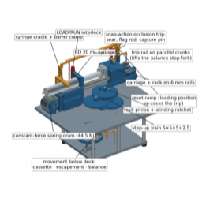
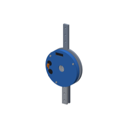
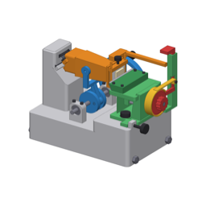

Projects
-

ChronoFlowAn electricity-free, clockwork-governed syringe driver for neonatal care in low-resource settings. It meters volume rather than pressure, with a predicted accuracy of about ±1.2% against a ±5% requirement and a parts cost near $40. -

LATCH KneeA stance-control knee joint for knee-ankle-foot orthoses that reads the loads it already carries, with no pendulum, cable, or battery, and locks at any angle. Simulated on 9,781 measured strides from 51 subjects, it locked at heel strike in 99.2% of strides at speeds up to 1.5 m/s. -

FlexTomeA 3D-printed rocking microtome with a backlash-free flexure pivot and a differential-screw feed built from standard M8 threads. It targets 5 µm paraffin histology sections, with a predicted 5.01 ± 0.72 µm and a parts cost of about $62.